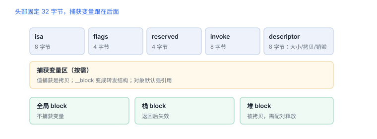

Block、闭包与捕获
block 是一块带函数指针与捕获变量的结构体，32 字节起步
Block 不是“匿名函数”这么抽象：它在内存里是一块有固定头部的结构体，捕获的变量跟在后面。理解布局，才能解释栈/堆拷贝、__block 转发与循环引用。
1. 内存布局
| 字段 | 大小（64 位） | 作用 |
|---|---|---|
isa | 8 | 指向 block 的类（栈/堆/全局三种） |
flags | 4 | 是否捕获、是否有签名等标志 |
reserved | 4 | 保留 |
invoke | 8 | 函数指针，调用时执行它 |
descriptor | 8 | 大小、拷贝/销毁辅助函数、签名 |
头部固定 32 字节，之后是捕获变量；结构体总大小记录在 descriptor 里，拷贝与销毁都靠它计算。
2. 三种存储域
| 域 | 何时出现 | 风险 |
|---|---|---|
| 全局 | 不捕获任何外部变量 | 无生命周期问题 |
| 栈 | 捕获变量且未拷贝 | 函数返回后失效，异步使用必崩 |
| 堆 | 被 Block_copy 或 API 拷贝 | 需配对释放，易成环 |
捕获语义对比
int x = 1;
void (^a)(void) = ^{ printf("%d", x); }; // 值捕获：拷贝当前值
x = 2; // a 仍打印 1
__block int y = 1;
void (^b)(void) = ^{ printf("%d", y); }; // 转发：读的是变量本身
y = 2; // b 打印 2
3. 捕获方式
| 写法 | 捕获什么 | 典型问题 |
|---|---|---|
| 直接引用对象 | 强引用 | 闭包与对象互持成环 |
__weak / [weak self] | 弱引用 | 执行时可能已置空，需判空 |
__block | 可变量转发 | 跨线程读写需同步 |
捕获 self 的属性 | 等价强捕获 self | 容易忽略的环 |
栈 block 是异步陷阱
函数返回后栈 block 失效，异步回调里调用它会崩溃；凡是可能逃出作用域的场景，都应确认已被拷贝（堆上）。
函数返回后栈 block 失效，异步回调里调用它会崩溃；凡是可能逃出作用域的场景，都应确认已被拷贝（堆上）。
4. 与 Swift 闭包的对应
- Swift 闭包同样是引用类型，捕获列表决定强弱。
@escaping标记“会逃出当前作用域”，编译器因此要求显式处理self。- Swift 的
weak捕获与 Objective-C 的__weak语义一致，都会在目标释放后置空。
5. 失败分流
| 现象 | 原因 | 查哪里 |
|---|---|---|
| 崩溃在 block 调用处 | 栈 block 已失效 | 是否被正确拷贝 |
| 对象不释放 | block 强捕获 self | 捕获列表 |
| 读到旧值 | 值捕获而非 __block | 捕获方式 |
| 偶发崩溃在读捕获变量 | 跨线程未同步 | 访问隔离 |
6. 数据细节：block 的字节布局
| 部分 | 大小（64 位） | 作用 |
|---|---|---|
| 头部 | 32 字节 | isa、flags、reserved、invoke、descriptor |
| 捕获区 | 按需 | 值拷贝或转发结构 |
| descriptor | 固定字段 + 辅助函数 | 决定拷贝与销毁方式 |
7. 一次真实排查记录：异步回调崩溃
- 现象：异步回调执行时崩溃，地址落在 block 调用处。
- 先看存储域：block 是栈上分配的，函数返回后已失效。
- 确认拷贝：异步 API 是否对 block 做了拷贝。
- 改法：显式拷贝或改由持有方保存。
- 结论与限制：记录“栈 block 逃逸”，并注明结论只对该调用路径成立。
8. 自测
- Block 头部固定占多少字节？之后是什么？
- 栈 block 与堆 block 的差别体现在哪个字段？
__block与普通值捕获在读写语义上有什么不同？- 为什么“捕获 self 的属性”也可能成环？